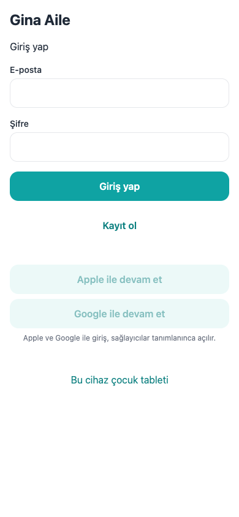
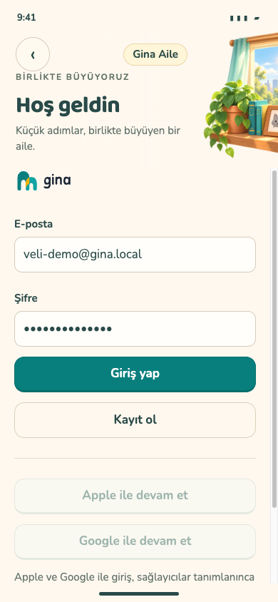

Gerçek uygulama · 30 Ekim

v5 tasarım maketi

Solda localhost:8081 uygulamasının mevcut ekranı; sağda onay bekleyen v5 tasarım. Diğer ekranların gerçek görüntüsü demo auth şema hatası nedeniyle henüz alınamadı.

